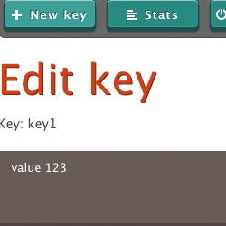
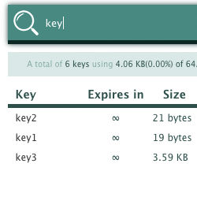
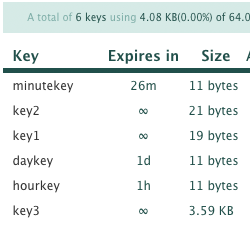
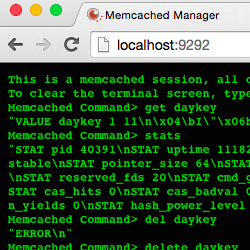

The definitive solution to manage your memcached server.
Miss being able to actually know what's inside your memcached server in a simple way? Memcached Manager is there for you.




All that packaged in a web interface -- just install it and use it! It's also pluggable to any rack/rails application with just one line of programming.
Install the gem.
gem install memcached-managerRun memcached-manager with your memcached up
memcached-managerIf your memcached is running on a different domain or port(locahost:11211):
memcached-manager -H foo.bar -P 1337or
memcached-manager --memcached-host foo.bar --memcached-port 1337
Just mount it in your routes(config/routes.rb) file:
mount MemcachedManager::Routes, :at => '/mm'
So it will be accessible in the "/mm" route of your application.
If you want to specify a different configuration than the defaults(localhost:11211) add an .env file with the following:
memcached_host: foo.bar
memcached_port: 1337
Ruby >= 1.9.3
Memcached (of course)
Ami Onodera - Made the logo.
Copyright © 2013-2015 Thiago Fernandes Massa. The MIT license.